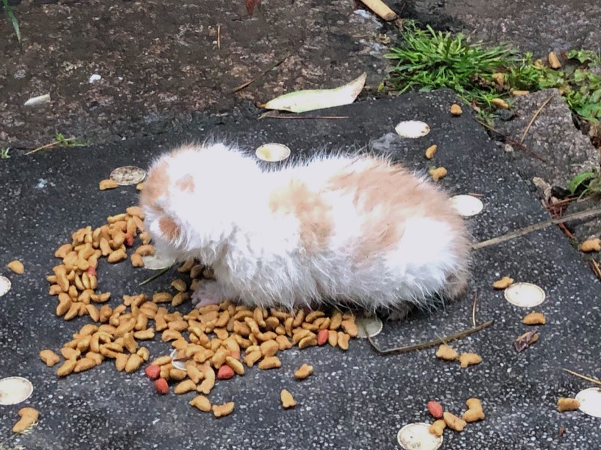
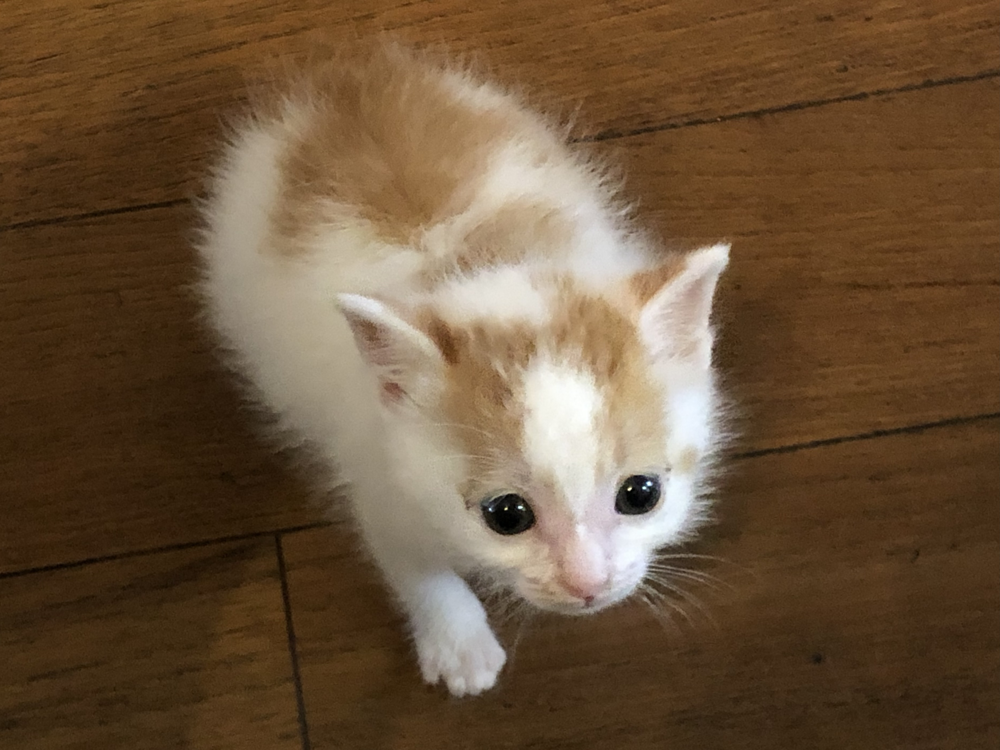
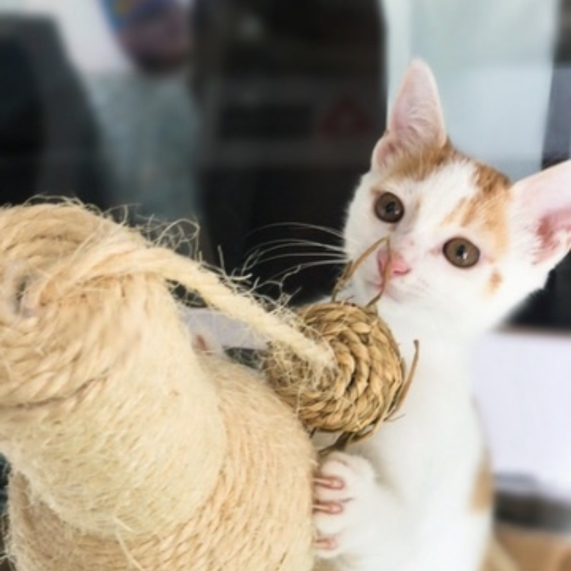
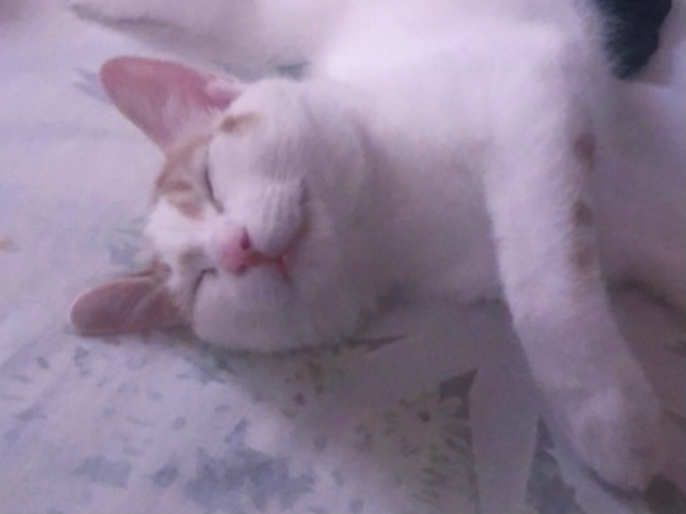
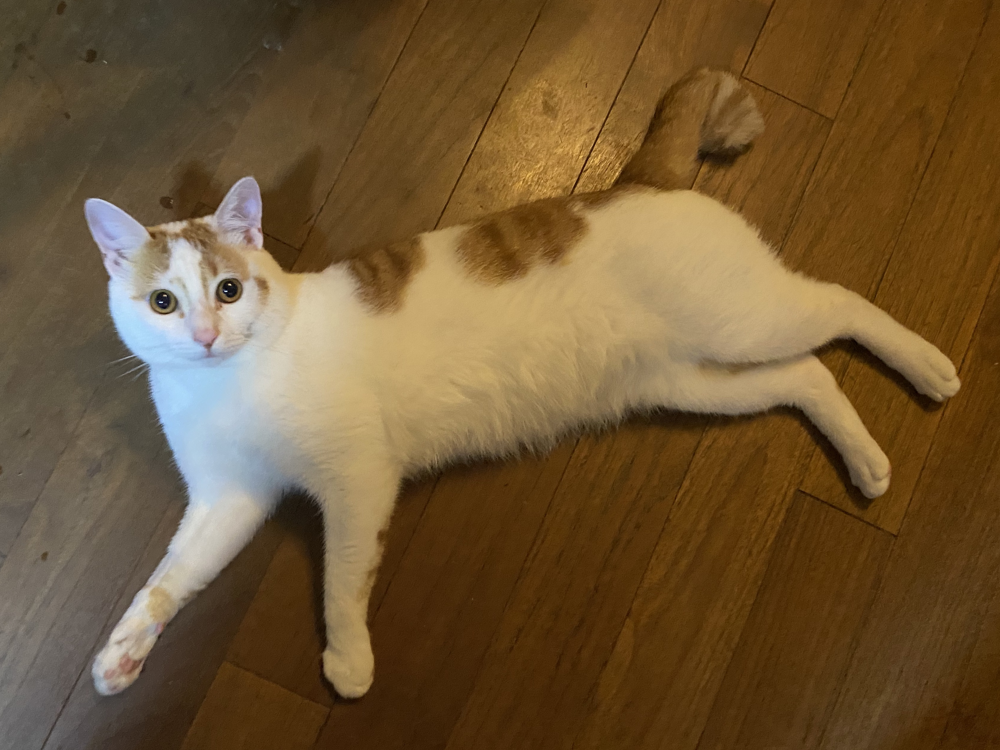
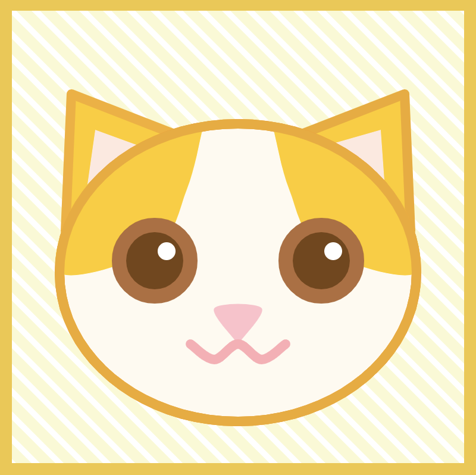

 The rain was light at that day, so my mom went to the park near our home to feed the homeless cats as usual. When she arrived to the spot where she usually feed the cats, she saw a kitten which was less than 7 days old. Obviously, this baby cat won't live through the rainy day if no one took it home. Finally, my mom decided to take it home.
During that time, my mom was living in Shanghai and I was stuying in high school in LA. Both of us have never had a pet before. She called me and told me that she has adopted this little kitten and named it Laifu. I was really excited and encouraged her.
 This photo was taken by my mom before she came to LA to attend my high school graduation ceremony. She gave Laifu to a trustworthy friend to take care for a month.
At this stage I realized that Laifu did not look like the chubby, fluffy kittens I saw on the internet. Still, I really looked forward to meeting it during the summer holidays.
 This photo was taken by me when I came back to Shanghai during the summer holidays. Laifu and I really liked each other and we got along very well.
At this stage Laifu was 3 month old and was very active and vivacious. This photo captured the moment when he was playing with one of his toys.
 This photo was taken when Laifu was 5 month old. He became less active,ate more, and loved sleeping 😂. This is both kind of a good thing and a bad thing for us to know. On one hand he looked more like the cute, fat cat I saw online. On the other hand, we were starting to worry that he would become too fat in the future.
There is a saying that if there are 10 orange cats, 9 of them are fat, and the last one is too heavy that it will break you bed. Although Laifu is half orange and half white, we guess he may have that chubby gene of orange cat.
 I came back to Shanghai due to the Covid-19 pandemic. I haven't seen Laifu for about a year and I really missed him. Since I was going to stay at Shanghai and take online courses, I have more time to play with Laifu. We slept in the same room and Laifu would slept on my table when I was doing homework in the nights.
Also, luckily, Laifu didn't get fatter.
 Since Laifu is always staying with me when I was doing my homeworks, it became a main inspiration for me while doing some of my homeworks. In the below link, you could find a mini game made by me using p5.js. It was called "Please Your Cat".
"Please Your Cat!"